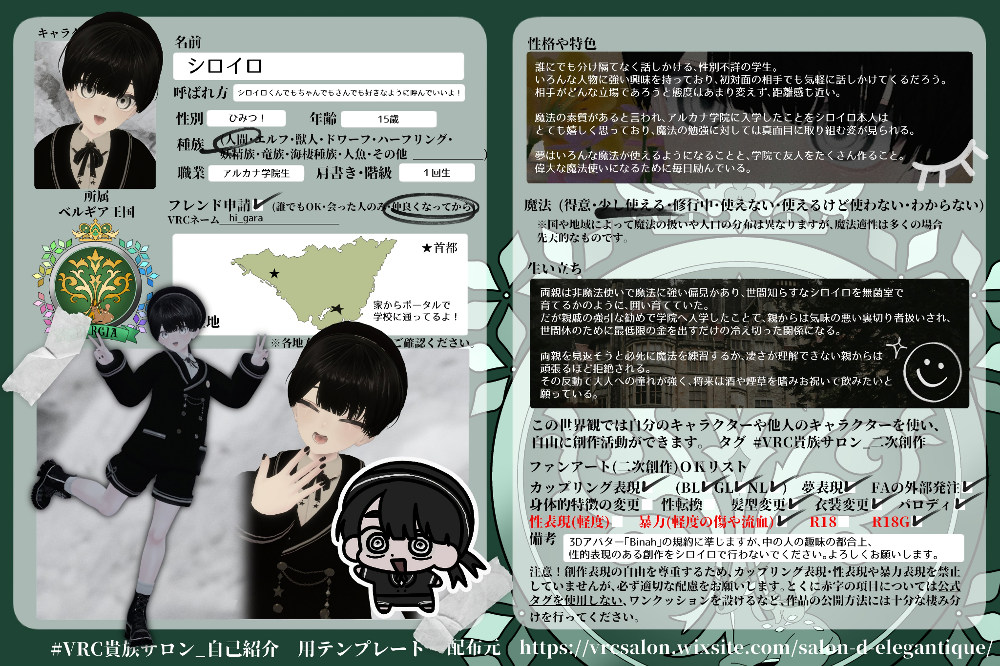

概要
ベルギア王国出身のアルカナ学院生。誰にでも分け隔てなく話しかける性別不詳の学生。いろんな人物に強い興味を持っており、初対面の相手でも気軽に話しかけていく。相手がどんな立場であろうと態度はあまり変えず、距離感も近い。
性格・特色
魔法の素質があると言われ、アルカナ学院に入学したことを本人はとても嬉しく思っている。魔法の勉強には真面目に取り組む姿が見られる。
生い立ち
両親は非魔法使いで魔法に強い偏見があり、世間知らずなシロイロを無菌室で育てるかのように囲い育てていた。だが親戚の強引な勧めで学院へ入学したことで、親からは気味の悪い裏切り者扱いされ、世間体のために最低限の金を出すだけの冷え切った関係になる。両親を見返そうと必死に魔法を練習するが、魔法が理解できない親からは頑張るほど拒絶される。その反動で大人への憧れが強く、将来は酒や煙草を嗜み、お祝いで飲みたいと願っている。
二次創作について
この世界観では、自分のキャラクターや他人のキャラクターを使い、自由に創作活動ができます。
- カップリング表現 / BL・GL・NL OK
- 夢表現 OK
- FAの外部発注 OK
- 身体的特徴の変更・性転換・髪型変更・衣装変更・パロディ OK
- 性表現・暴力表現・R18 / R18G CSの記載・規約を確認
改変元アバターの規約や、各キャラクターのCSに記載された注意事項に準拠して楽しんでください。
キャラクターシート
Character Sheet / Original Reference
